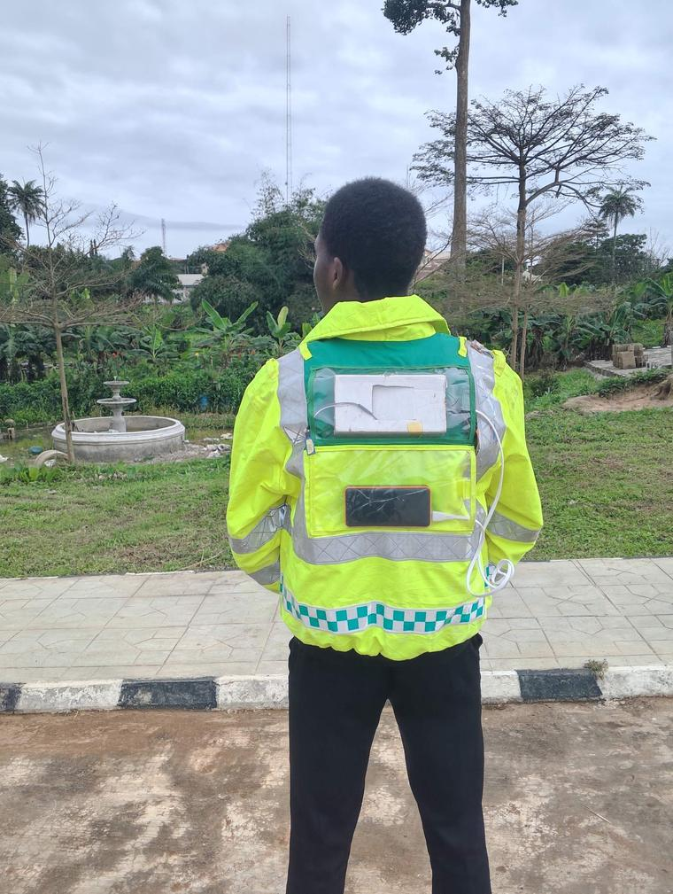
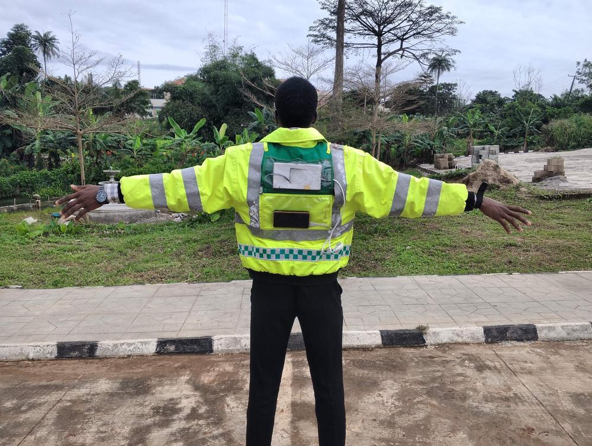
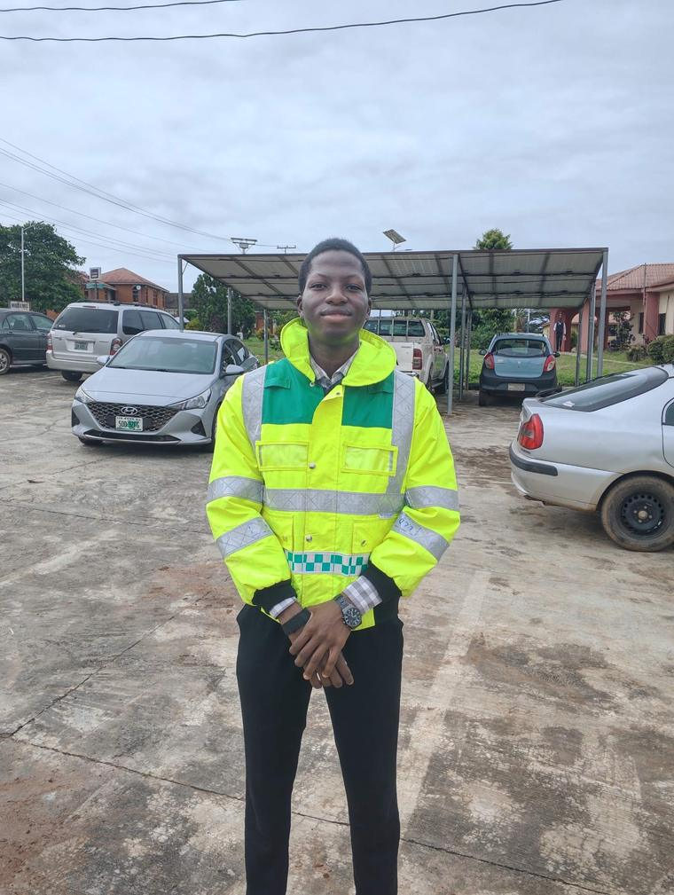
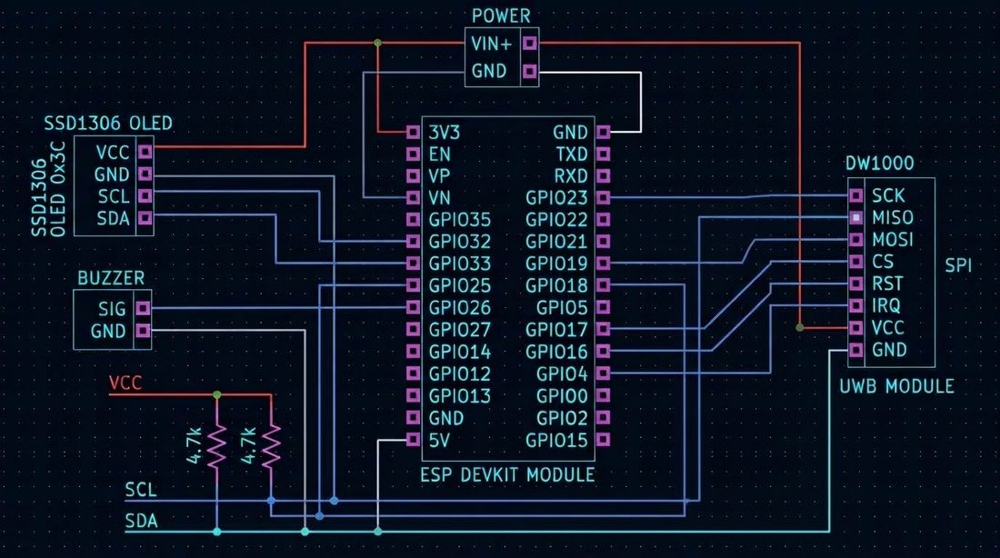
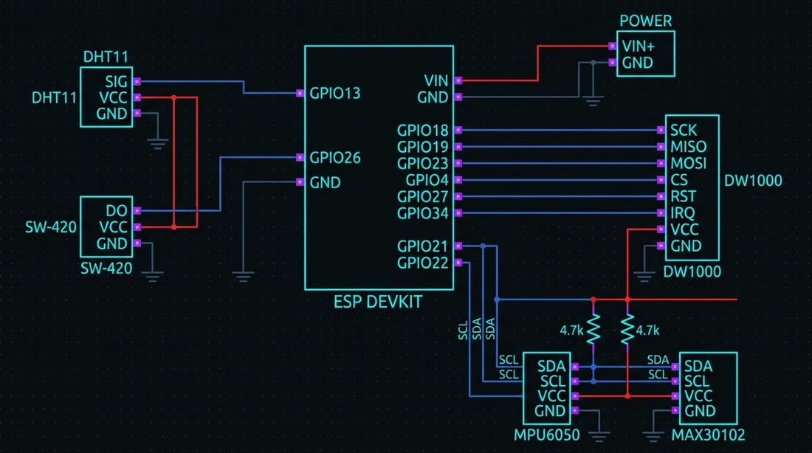
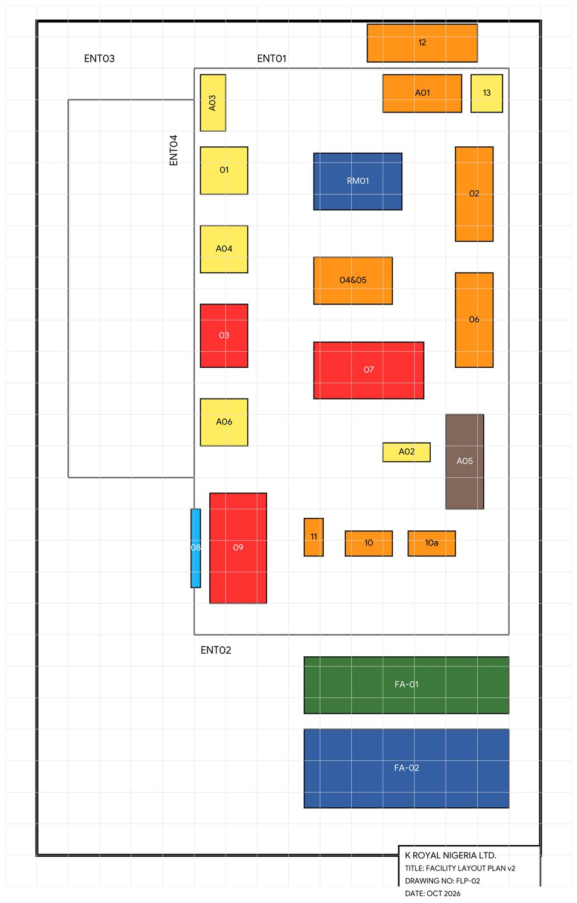
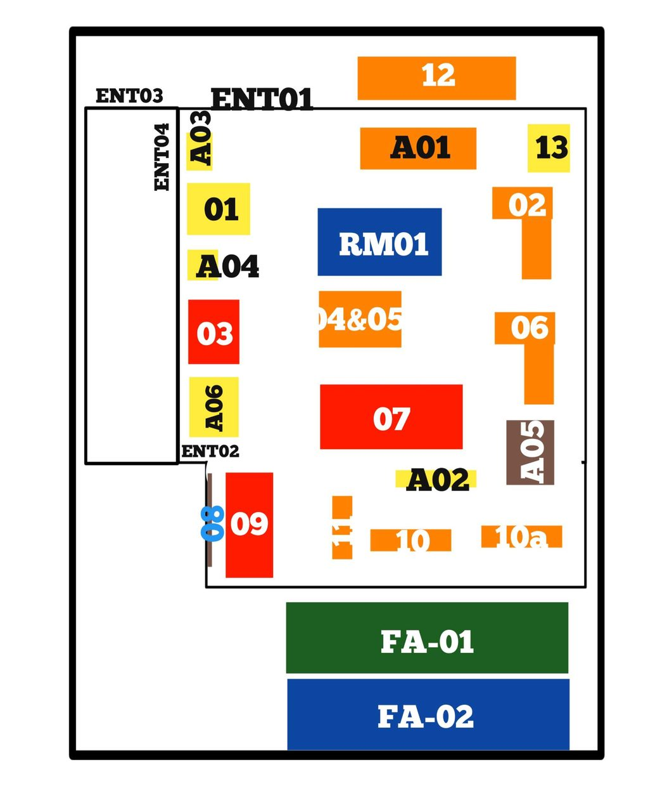

Hi, I’m Akinwumi. Call me Akinnuel.
It’s a blend of both my names — and no, it isn’t a company. I’m an Industrial and Production Engineer who likes turning messy problems into systems people can actually use. Poke around: research, projects, and a few stories from outside the work.
Current focus[2026]
- Background
- Industrial Engineering
- Research
- Decision science
- Practice
- Production planning
- Projects
- Engineering & software
- Seeking
- Anything, honestly
Research & MCDM ↗
Developing decision frameworks for complex, uncertain choices.
Applied Projects ↗
Engineering work spanning safety systems, facility layout and software.
Experience ↗
Production planning support and practical industrial engineering.
Background ↗
Education, technical skills and professional direction.
Personal notes ↗
Memories, milestones and stories beyond the work.
Decisions under uncertainty.
I’m interested in how decision models can make complex choices more transparent. My work explores multi-criteria decision-making (MCDM), context-sensitive evaluation and risk filtering, with an emphasis on understanding why an alternative ranks well and when that ranking should be questioned.
Research in development
SubSense-MC
A developing MCDM framework that modifies the MEREC-based weighting process and incorporates context-sensitive weighting and risk filtering. Current work focuses on formalising the method and conducting limited experimental validation.
Optryx
A risk-management model designed for decision-support software. Its job is to make sure the options a system recommends are not just high-scoring, but acceptable under risk. Currently in development.
Working papers are in preparation. Full methods are shared with reviewers, supervisors and collaborators on request.
Tools & methods
Engineering in practice.



Rear view · tap the markers · tap the photo to zoom
Underground miner safety jacket
Developed an ESP32-based wearable safety-monitoring prototype integrating physiological sensing, temperature and humidity monitoring, and UWB positioning, including a shoulder-mounted sensor. Work included sensor integration, troubleshooting, system testing and a custom web dashboard hosted directly on the ESP32 to display live readings.
Under the hood

Schematic 01 · ESP32, OLED display, buzzer, UWB module

Schematic 02 · ESP32, DHT11, SW-420, MPU6050, MAX30102, UWB


Earlier draftUpdated planDrag to compare the earlier draft with the updated plan
Facility layout study
Created a CAD-based facility layout showcasing product families and machine connectivity. The work is presented as a layout showcase of product families and machine connectivity, not as a completed quantitative optimisation study.
Software & systems
OpenBox
A software “box” that lets new applications connect with legacy software without rebuilding either side. The concept explores a compatibility layer that connects to existing systems, translates between their different structures and exposes a consistent interface to modern applications, reducing the repeated, one-off integration work that makes older systems hard to reuse.
Manufacturing systems work
Exploring how production-planning and operational decision problems can be translated into software requirements, structured data and computational workflows. Further public details are intentionally limited.
Improving how work flows.
A record of responsibilities held in industrial and organisational settings, kept separate from independent projects and research.
Industrial experience
Production planning support
Checked client-required production quantities and distributions, and prepared production breakdowns for more than 500 metres of requirements. The work involved translating order specifications into clear production quantities and length distributions.
Leadership & coordination
Content Team Lead
Syntellects · IPE CLASS’25. Led content-team activities for the graduating class, including content planning, writing, coordinating contributors and documentation. This was a class-level leadership role, not a departmental appointment.
How I work
Every system is perfectly designed to get the results it gets. My work is to redesign the system.
I approach work by clarifying the problem, organizing the available information, checking constraints and documenting decisions so that the next person can follow the reasoning.
Background & timeline.
A recent Industrial and Production Engineering graduate building experience across research, production planning and applied engineering. I’m interested in opportunities where structured thinking and careful execution can support better operational decisions.
Timeline
Independent research & project work
Developing decision-analysis research and documenting applied engineering and software projects.
B.Eng completed
Industrial & Production Engineering, Federal University of Technology, Akure (FUTA). Final CGPA: 4.35/5.00.
Matriculation · FUTA
Formally began the B.Eng. programme in Industrial & Production Engineering.
Skills
Beyond the work.
A personal journal of memories, people, milestones and moments worth keeping. This space is intentionally more personal than the rest of the portfolio, and the stories are written in my own words.
Let’s talk.
Open to research, scholarships, roles, collaborations — or just a good conversation. Honestly, send anything.